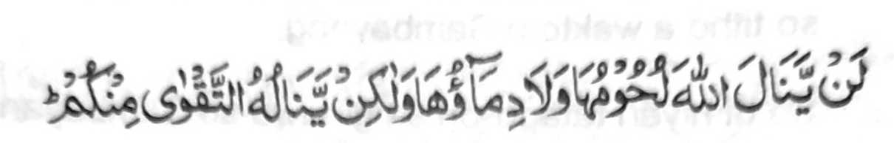

Madakel a manga tao a ipethindeg iran so Sambayang ago madakel kiran pen a sisiyapen niran pen so bara Jama' ogaid na ipethindeg iran sa di tarotop na taman sa kena ba giyabo a da iran kakowa-a ko manga balas ago manga limo (a ipembegay) sabap kiran, ka da matarima sekaniyan (a Sambayang). Kena ba giyangka-iya miya-aloy na ba peman lagid o kabagak sa Sambayang, a so kiyakenala tano ron na tanto a minitaralo so dosa on. Makimpen miyapapas tano ko manga balas ko kipephamayandegen ko Sambayang sa di tarotop, a da mambo tarima-a, ogaid na miyakalidas tano ko dosa ko kindadarai-nonen ago kapezopaka tano ko manga sogo-an o Allah. Ogaid, na sagitiyambo ka sominggay tano so manga oras tano, na inawa-an tano so manga galebek tano na meromasay tano, na ino tanoto di ziyapa a makowa tano so miyakapiya-piya a balas pantag o manga oras tano ago so galebek tano a nggolalan ko kipethindegen ko Sambayang ko pithamanan a mapiya a khagaga tano.
Giyangka-iya a ika telo ba-ad na biyagi sa telo a pinto. Si-i ko paganay na, maloy ron so saba-ad a manga Ayaat sa Qur'an makapantag ko manga tao a miyasiksa sabap ko marata a Sambayang iran ago siran a manga tao a kiyabantogan sabap ko mapiya a Sambayang iran. Si-i ko ika dowa pinto na tinimo-on so makapantag ko totholan ko Sambayang o saba-ad a manga tao a pekhababaya-an niran so Allah. Si-i ko ika telo a pinto na papadalemen non so manga katharo o Rasuloliah (Sallallaho 'Alaihi Wasallam) makapantag sangka-iya bandingan.

"Diden izampay ko Allah so manga sapo iran, go so manga rogo iran: Na oga-id na izampay ron so kapangongonotan a pho-on rekano.. "[Soorah Al-Hajj:37]
Minsan pen giyangka-iya Ayaat na si-i maka-antap ko ayam a pikhorban, oga-id na so 'enda-o niyan na khapakay ko manga ped a simba. Si-i matatago ko kapagi-ikhlas go so kathotomangked ko simba i ron pagilaya o Allah so katharima-a Niyan non. So Ma'az (Radhiallaho ’Anho) na pitharo iyan, "Kagiya sogo-on ako o Nabi (Sallallaho 'Alaihi Wasallam) sa Yemen, na miyangeni ako ron sa mori a wasiyat. Pitharo iyan, "Pag-ikhlas ka ko langon o simba, sabap sa so ikhlas na pekhaomanan iyan so balas o amal, mapiya i kaito iyan."
So Thauban (Radhiallaho 'Anho) na piyanothol iyan a miyaneg iyan so Nabi (Sallallaho 'Alaihi Wasallam) a gi-i niyan tharo-on, "lnikalimo so magi-ikhIas, sabap sa siran i manga palita-an o toro-an. Pekhabogao iran so miyakarata-rata sabap ko ikhlas iran." Miya-aloy ko isa a Hadith, "Sabap ko kapakadadarepa o manga malemek ago sabap ko manga Sambayang iran go so kapagi-ikhlas iran a kapephaka-oma o tabang o Allah ko manga tao."